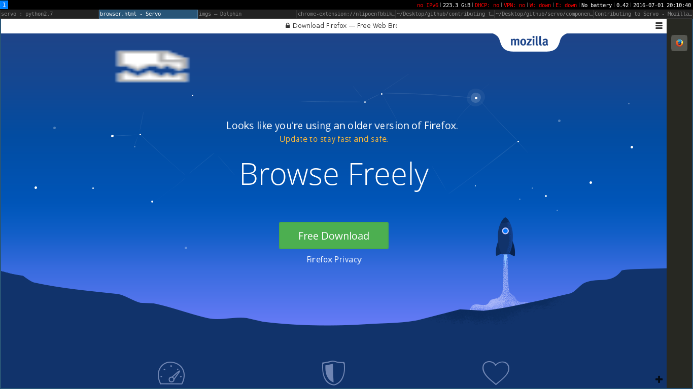
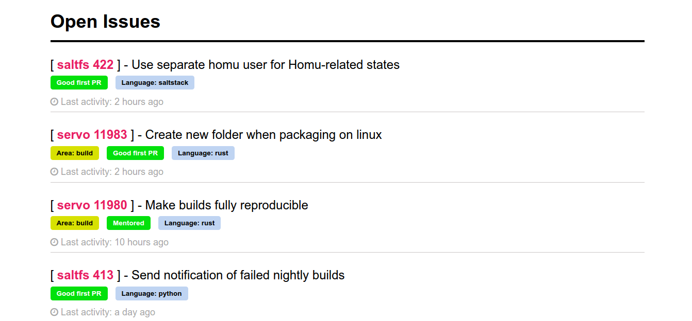
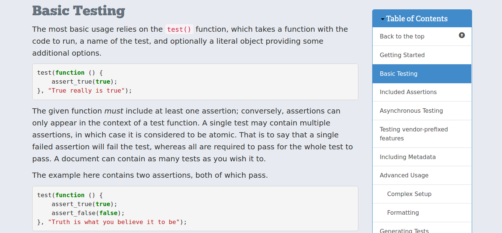
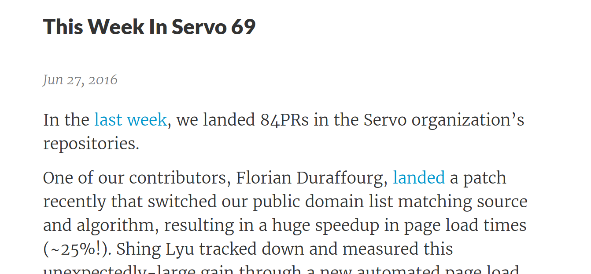

Contributing to
Servo

Mozilla
July 2, 2016
@Rust Group Bangalore (RGB)Me!
'creativcoder' on


Loves Open source, Rust Enthusiast
Currently an Intern
blogs at : creativcoder.xyz
What is Servo ?

and Motivations
How Browser engines work

Fast Rendering and Parallel Layout
 Low memory footprint and lesser power consumption
Low memory footprint and lesser power consumption
 Embeddable engine compatible with Chrome Embedded Framework
Embeddable engine compatible with Chrome Embedded Framework
Making browser engine less vulnerable to exploits ( thanks to Rust )
Servo's architecture

How Servo renders the web today
Why contribute ?
* Write real world rust code
* Better understanding of the web as a platform
* Appreciate how a browser engine works
How can i help
https://starters.servo.org/
 Very Easy! => Servo StartersIngredients to Contribute
- Read web platform feature Spec
- Write respective binding code, from the WebIDL spec
- Write respective Rust code
- Write a web platform test if applicable
- Get mentioned on "This week in Servo" Yay! :D
Read web platform feature Spec
https://html.spec.whatwg.org/multipage/webappapis.html#navigatorlanguageAdd WebIDL interface definition and generate glue code
Write related rust code
Write a web platform test if applicable
Get mentioned on This week in Servo. Yay! :D
* Try Servo, in real world and File issues
* Improve Documentation
* Improve our build system'Mach'
Demo
So get Rusty and start contributing to Servo :)
Thanks; Questions ?